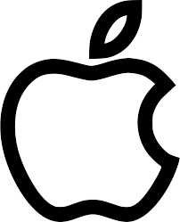

2006–2012: Public access, Microsoft alliance,
and rapid growth
In May 2006, Facebook hired its first intern, Julie Zhuo.[37] After a month, Zhuo was hired as a full-time engineer.[37] On September 26, 2006, Facebook opened to everyone at least 13 years old with a valid email address.[38][39][40] By late 2007, Facebook had 100,000 pages on which companies promoted themselves.[41] Organization pages began rolling out in May 2009.[42] On October 24, 2007, Microsoft announced that it had purchased a 1.6% share of Facebook for $240 million ($339 million in 2022 dollars[18]), giving Facebook a total implied value of around $15 billion ($21.2 billion in 2022 dollars[18]). Microsoft's purchase included rights to place international advertisement
All youtuber
